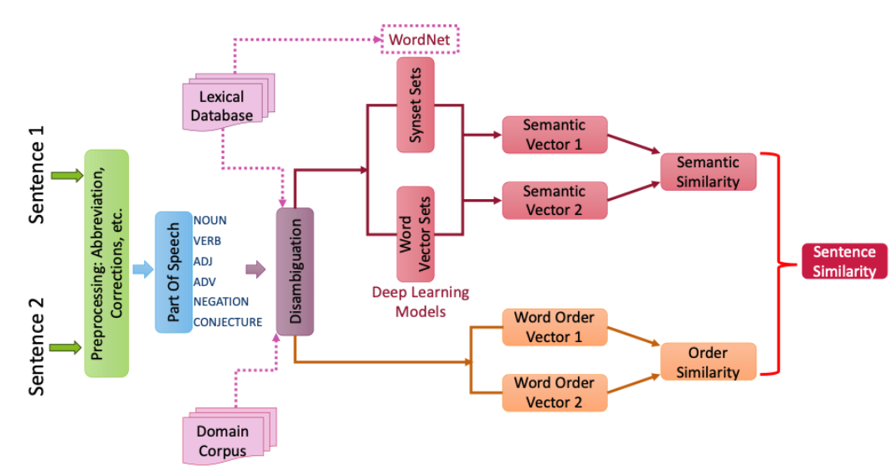

Semantic Similarity Analysis¶
Leveraging WordNet for semantic similarity calculations with word disambiguation. The semantic similarity is based on maximum word similarity between one word and another sentence. In addition, word order similarity can be also considered in the semantic similarity calculations.
Setup the path and load DACKAR modules for similarity analysis¶
[ ]:
import os
import sys
cwd = os.getcwd()
frameworkDir = os.path.abspath(os.path.join(cwd, os.pardir, 'src'))
sys.path.append(frameworkDir)
import time
from dackar.similarity import synsetUtils as SU
from dackar.similarity import simUtils
Example¶
[ ]:
# sents = ['The workers at the industrial plant were overworked',
# 'The plant was no longer bearing flowers']
sents = ['RAM keeps things being worked with', 'The CPU uses RAM as a short-term memory store']
# sents = ['The pump is not working due to leakage', 'There is a leakage in the pump']
Compute sentences similarity without disambiguation¶
delta \in [0, 1] is used to control the similarity contribution from semantic and word order similarity
[ ]:
similarity = simUtils.sentenceSimilarity(sents[0], sents[1], infoContentNorm=True, delta=.8)
print('Similarity Score: ',similarity)
[ ]:
similarity = simUtils.sentenceSimilarity(sents[0], sents[1], infoContentNorm=False, delta=.8)
print('Similarity Score: ',similarity)
Compute sentences similarity with disambiguation¶
[ ]:
similarity = simUtils.sentenceSimilarityWithDisambiguation(sents[0], sents[1], delta=.8)
print('Similarity Score: ',similarity)
Convert sentences into synsets list, and then compute similarity¶
[ ]:
sentSynsets = simUtils.convertSentsToSynsets(sents)
similarity = SU.synsetListSimilarity(sentSynsets[0], sentSynsets[1], delta=.8)
print('Similarity Score: ',similarity)
#### Using disambiguation method to create synsets
[ ]:
sentSynsets = simUtils.convertSentsToSynsetsWithDisambiguation(sents)
similarity = SU.synsetListSimilarity(sentSynsets[0], sentSynsets[1], delta=0.8)
print('Similarity Score: ',similarity)
Timing for performance¶
[ ]:
st = time.time()
for i in range(100):
sentSynsets = simUtils.convertSentsToSynsets(sents)
print('%s second'% (time.time()-st))
[ ]:
st = time.time()
for i in range(1000):
similarity = SU.synsetListSimilarity(sentSynsets[0], sentSynsets[1], delta=.8)
print('%s second'% (time.time()-st))
[ ]:
st = time.time()
sentSynsets = []
for i in range(1000):
for j in range(len(sents)):
_, synsetsA = simUtils.sentenceSenseDisambiguationPyWSD(sents[j], senseMethod='simple_lesk', simMethod='path')
sentSynsets.append(synsetsA)
print('%s second'% (time.time()-st))